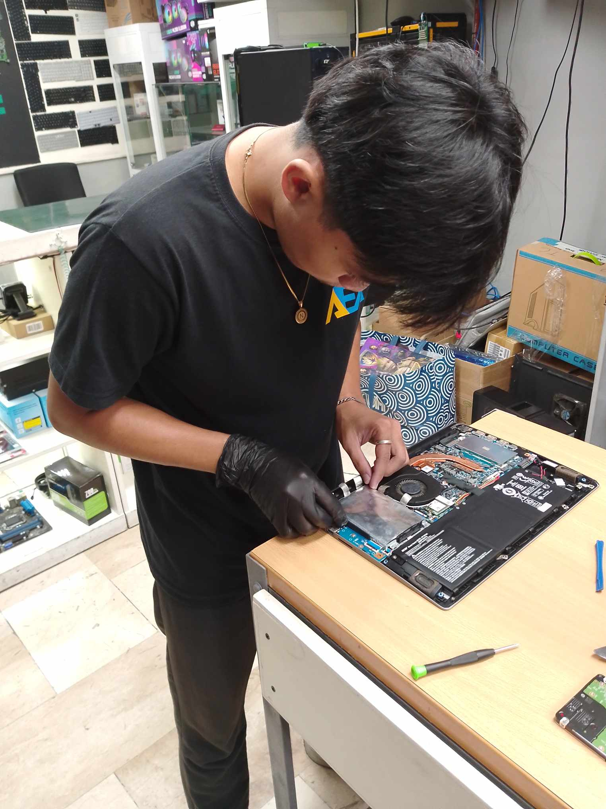
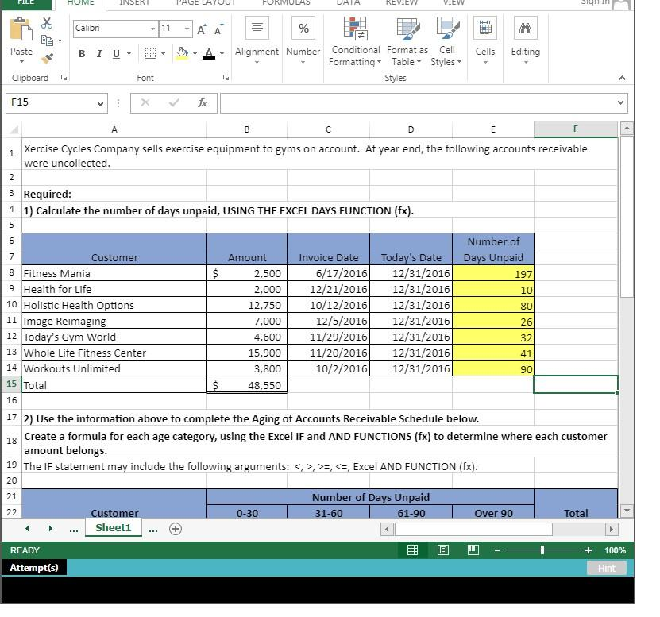
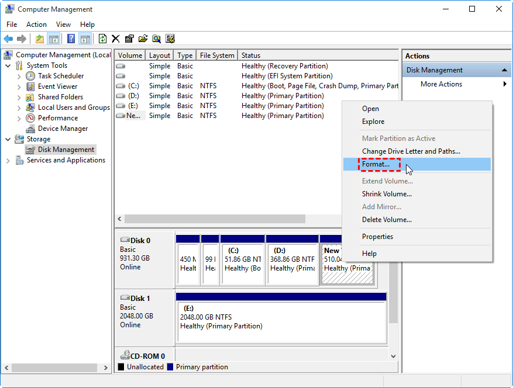

"In the course of my professional endeavors, I have engaged in a diverse range of tasks and responsibilities. I have adeptly acquired certain skills swiftly, and I am keenly committed to continuous learning to further elevate my proficiency in my field. My ongoing dedication to professional development underscores my aspiration to broaden my expertise, ultimately enhancing my capacity to effectively handle a myriad of responsibilities in my work."
|

REPAIRING LAPTOP |
ASSEMBLE & DISASSEMBLE COMPUTER |
|

MAKING QUOTATION |

FORMATTING |